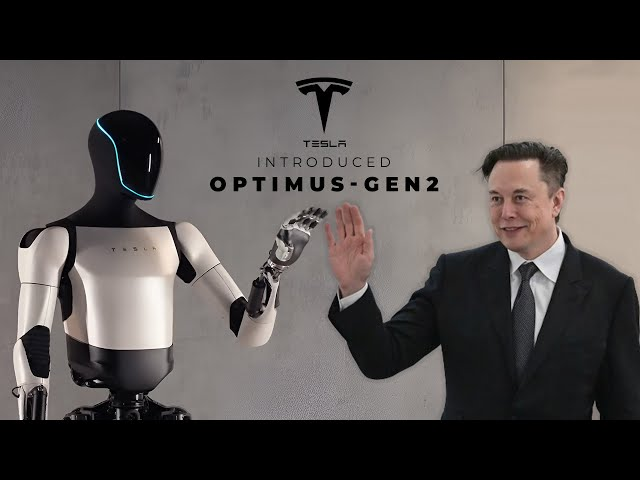
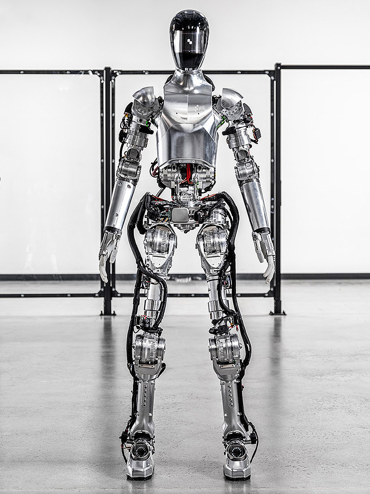
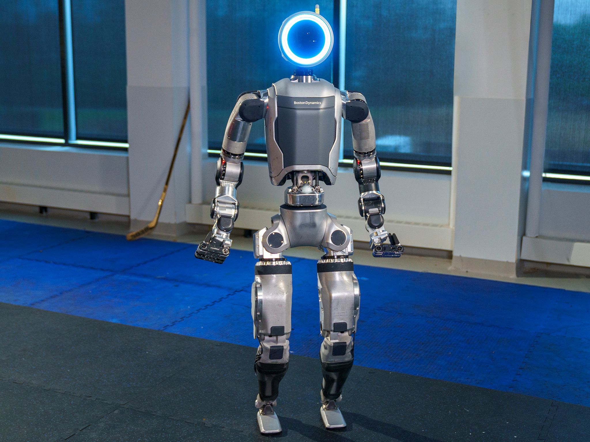

Últimas Novedades en Robótica
La robótica avanza a pasos agigantados en 2025, liderada por empresas como Tesla, Boston Dynamics y nuevas startups enfocadas en robots humanoides.
Tesla Optimus Gen 2

La segunda generación del Tesla Bot, ahora llamado Optimus Gen 2, es más ligero, rápido y ágil que su predecesor. Está diseñado para tareas domésticas, industriales y de asistencia.
- Altura: 1.77 metros
- Peso: 56 kg
- Movilidad: Movimiento ágil y control de manos mejorado
- Batería: 2 horas de autonomía
- Aplicaciones: Hogar, fábricas, logística
Figure 01

Figure 01 es un robot humanoide diseñado para reemplazar trabajos repetitivos en industrias como manufactura, logística y agricultura. Ha logrado caminar, cargar cajas y manipular herramientas básicas.
- Altura: 1.68 metros
- Movilidad: Bipedal avanzada
- Aplicaciones: Industria, agricultura, comercio
Boston Dynamics - Atlas

Boston Dynamics continúa perfeccionando a Atlas, su robot bípedo capaz de realizar saltos, carreras y movimientos de parkour impresionantes. Atlas es utilizado principalmente para investigación avanzada.
- Altura: 1.5 metros
- Capacidades: Saltos, maniobras complejas, parkour
- Aplicaciones: Investigación y desarrollo